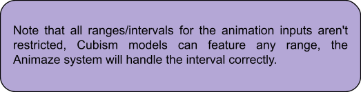

Dive Into Documentation
Cubism 3+ format
The Animaze platform supports Live2D avatars that are exported for the runtime Cubism 3+ (tested with 3.0, 3.1, 3.2 and 3.3 models). The reason behind adding Cubism models in Animaze is to use as much information exported with the Cubism Editor as possible, including:
➢ special actions (full animations that override tracking remapping) – the system will look for *.motion3.json files in the motions/ folder of the avatar
➢ special poses (certain animation inputs that need to have specific values, without any influence from tracking remapping) - the system will look for *.exp3.json files in expressions/ folder of the avatar
➢ default idle pose (hide certain parts for the default pose) - *.pose3.json file
➢ physics - *.physics.json file
➢ other model info (finding the files mentioned above and also the .moc3, textures etc.) - *.model3.json file
Live2D Special Actions
The special actions and the special poses have no restrictions, just that one needs to consider the following behaviors:
• special animations need to end in idle pose, if the character needs to go back to idle pose; if not, it's left in the state of the last frame of animation.
• special poses animation inputs are overwritten by tracking retargeting
i.e. if a special pose changes ParamEyeLOpen input to 0 (eye shut), it will be overridden by face tracking. It is recommended to use inputs that are not mapped by the Animaze tracking system.
To create an idle animation for the 2D avatar, you must create a loopable animation by moving the selected parameters, where the avatar is in a generic position (usually it’s a breathing animation). The first and last animation frames must be identical.
Motion Parameters
The animation inputs list controlled by Animaze tracking mapping is as follows:
Head movement:
• ParamAngleX - for right to left twist movement.
• ParamAngleY - for down to up movement.
• ParamAngleZ - for right to left lean movement.
Body movement:
• ParamBodyAngleX - for right to left twist movement.
• ParamBodyAngleY - for down to up movement.
• ParamBodyAngleZ - for right to left lean movement.
• ParamBreath - for breathing movement.
Eyes movement:
• ParamEyeBallX - for right to left movement.
• ParamEyeBallY - for down to up movement.
• ParamEyeLOpen - for closed to open left eye movement. The default value for this input is used as eye completely open; going to max value, the eye wide open expression is remapped, while min value to default value is the normal eye close motion.
• ParamEyeROpen - for closed to open right eye movement. The default value for this input is used as eye completely open; going to max value the eye wide open expression is remapped, while min value to default value is the normal eye close motion.
• ParamEyeBallForm - bends eyes contour to complement frown expression.
Eyebrows movement:
• ParamBrowLY - for left eyebrow down to up movement.
• ParamBrowRX - for right eyebrow down to up movement.
• ParamBrowLAngle - for left eyebrow tilting movement.
• ParamBrowLForm - for left eyebrow changing shape movement.
• ParamBrowRAngle - for right eyebrow tilting movement.
• ParamBrowRForm - for right eyebrow changing shape movement.
Mouth movement:
• ParamMouthOpenY - for mouth closed to open movement.
• ParamMouthForm - for sad to smile movement.
• ParamMouthSize - for pursed lips movement
ParamMouthSize is a non-standard Live2D parameter that is optionally used by Animaze for puckered lips movement.
The default size of the mouth is considered at the middle of the parameter range, shrinking the mouth when going down to the lowest end, and growing the mouth when going to the highest end.
Animaze only uses the first half of the interval, low to middle. Concrete values for the interval are suggested, but not mandatory, to be -1 and 1, where 0 means default mouth size.
The Animaze Retargeting System normalizes all values (interval 0-1) before applying the Live2D parameters so that the parameter ranges can be of any values. E.G. ParamMouthOpenY can be defined from -10 to 10 with default value 0, so when Animaze sets 0.75 - which is a half smile -, it will apply the value 5 to the ParamMouthOpenY parameter.
Having this said, we do suggest following ranges for the Live2D Parameters:
|
Item |
Minimum values |
Default values |
Maximum values |
|
ParamEyeLOpen ParamEyeROpen |
0 |
0.75 |
1 |
|
ParamEyeBallX ParamEyeBallY |
-1 |
0 |
1 |
|
ParamBrowLY |
-1 |
0 |
1 |
|
ParamBrowLX |
-1 |
0 |
1 |
|
ParamBrowLAngle ParamBrowRAngle |
0 |
0.5 |
1 |
|
(*)ParamBrowLForm (*)ParamBrowRForm |
0.2 |
0.5 |
0.8 |
|
ParamMouthForm |
-1 |
0.5 |
1 |
|
ParamMouthOpenY |
0 |
0 |
1 |
|
ParamMouthSize |
-1 |
0 |
1 |

(*)The values for ParamBrowLForm & ParamBrowRForm in the table make the eyebrows deform as intended with the current tracking system.

Additionally, you can check the standard cubism parameter list here and here.